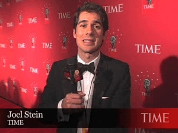

< < < Back
Milo Yiannopoulos Devastates Time Magazine’s Joel Stein And His Pro-Censorship Position – Return Of Kings
Time magazine just published an alt-right hit piece by Joel Stein entitled Why We’re Losing The Internet To The Culture Of Hate: How Trolls are Ruining the Internet, effectively calling for internet censorship to assuage hurt feelings of leftists on the internet. Gay conservative Milo Yiannopoulos recently had Stein on his podcast (Youtube link), revealing Stein to be no more than a barely competent typist emotionally pushing the leftist agenda.
No sooner than Stein comes on Milo’s podcast, Milo levels this blow, calling into question Time’s obvious bias:
Why are all the victims liberals in your piece? …because I have a theory about this.
Stein then offered this poorly reasoned rationalization:
I think they are more upset and more hurt. But I could have [put conservatives in the piece]…lefties get trolled more effectively.
Leftists might be overly emotional, but even Journalism 101 teaches “journalists” to get both sides of the story. Right away, Milo reveals the biases of Time.

Stein pushes leftist talking points in his shit piece on the alt-right and manosphere
Indeed, every single one of the victims in the Time piece are leftists, feminists, and other political opponents of the alt-right. Milo then goes on to expose feminists and other leftist “victims” everything from professional grievance mongers to whiny provocateurs who can dish it out but can’t take it. Milo says the grievance mongers actually love the hate they get online because that’s their currency—it gives them fame and fortune.
As the podcast plays on, Milo continues to assail Stein, running over him with a freight train of logic. He throws out some names that would have at least balanced the article a little if one wants to talk about women being trolled and having their names drug through the mud—Michelle Bachman, Sarah Palin, Ann Coulter, Margaret Thatcher. All these women were victims of hateful leftists who are never challenged by big media about their internet trolling and flat out lies. Milo says:
Conservative women get the worse abuse in the world…you made some partisan choices in the victims you chose for this piece. Everybody gets trolled on the internet…but you chose a particular side of the political divide to characterize as victims. You decided you were going to choose women and feminists…
Predictably, Stein had no rebuttal except to say he “should have” put conservatives in his story in a tone of voice that made him seem like a deer caught in the headlights of unrelenting logic from Milo. He then couldn’t resist playing the victim card himself saying “it’s very easy to troll me because my last name is Jewish.” Huh? Apparently, it never occurred to Stein that in writing a cover story for a supposedly unbiased national magazine he might need to try and balance his coverage a bit. Milo goes on:
[Michelle Malkin is] a very prominent conservative blogger in the United States wrote a book about [being trolled] and yet you didn’t interview her, you chose feminists. Put me through the reasoning.
Stein again had no logical comeback or reasonable excuse. It’s thorughly enjoyable to hear a leftist from Time magazine speechless as his tower of lies and half-truths comes crashing down all around him.
The Media Velvet Glove Conceals The Government Iron Fist
Milo peels back the velvet glove of the media and reveals the iron fist in this interview
Beyond astounding bias, make no mistake Stein is playing his role setting up the narrative that we need government intervention to protect us from the internet so Hillary can take control of it, if God forbid she wins this year’s election. His piece uses the tried and true Hegelian dialectic model of proposing a preconceived solution to a “problem” the media invents out of whole cloth. Let’s take a closer look at the hit piece in question. Stein wrote:
It would be smarter to be cautious, because the Internet’s personality has changed. Once it was a geek with lofty ideals about the free flow of information. Now, if you need help improving your upload speeds the web is eager to help with technical details, but if you tell it you’re struggling with depression it will try to goad you into killing yourself.
Always remember media propaganda is usually based on spurious claims like this one. If someone is that emotionally sensitive that internet trolls push them to the edge of suicide, they might not need to be on the internet in the first place. Or they might not need to be alive because people are mean whether they’re online or not. Just look at how mean Stein is stereotyping the entire alt-right and manosphere as nothing but evil trolls.
One must understand, as Milo obviously does, the media and government work hand in hand. The media is the velvet glove concealing the government’s iron fist. The media constantly pushes campaigns of fear, and in response an increasingly tyrannical government is only too happy to come up with all sort of new laws and regulations designed to “protect us” when in reality our freedoms and our money end up getting taken away and the “problem” never gets solved but it does get forgotten about by the scandal sheet writers. This is the case with pushing the “hate speech” narrative. The idea the government needs to “fix it” will come later, after the narrative has been established.
One of the leftist women featured in Time article’s victim parade is feminist Anita Sarkeesian, who made her name by using the victim card. From the Time article:
In 2012, after feminist Anita Sarkeesian started a Kickstarter campaign to fund a series of YouTube videos chronicling misogyny in video games, she received bomb threats at speaking engagements, doxxing threats, rape threats and an unwanted starring role in a video game called Beat Up Anita Sarkeesian.
Milo nuked this claim:
Feminists don’t do anything, they don’t write books about it. They’re lazy…[feminists] whine professionally to journalists and get all kinds of press about it and donations for their fundraising drives. These people don’t produce very much, they tend to be primarily famous for whining about harassment on the internet particularly when their careers start stalling. The way Sarkeesian got famous was she went on a round of interviews claiming she was getting abused and harassed, and she was getting all these death and rape threats. She wasn’t at the time but then she started getting them…and she got all this round of nice press from credulous journalists.
He then uses the Sarkeesian example to destroy the liberal victim narrative:
My reasoning is that the reason people always go with these liberal victims is that feminism is capitalizing on men’s natural chivalrousness and instinct…from all the journalists like you whose natural instinct is to protect women. Love them. Cherish them. Nurture them. I think you’re being abused by opportunistic gender activists. I think what’s happening is they’re coming to you with sob stories that you and other journalists in the media we don’t like very much, the “mainstream” media…we would say that you guys are credulous. We would say that you guys don’t check your facts. We would say that you guys don’t look into these [feminists].
Attention feminists and other leftists: Your victim card is about to expire
Whining indeed gets feminists political power and attention as they play victims and the media bends over to kiss their fat asses. Check out this excerpt as Stein attacks the alt-right and manosphere while implying Big Daddy Government needs to step in and police online speech. The implications of his proposal are frightening:
The alt-right’s favorite insult is to call men who don’t hate feminism “cucks,” as in “cuckold.” Republicans who don’t like Trump are “cuckservatives.” Men who don’t see how feminists are secretly controlling them haven’t “taken the red pill,” a reference to the truth-revealing drug in The Matrix. They derisively call their adversaries “social-justice warriors” and believe that liberal interest groups purposely exploit their weakness to gain pity, which allows them to control the levers of power. Trolling is the alt-right’s version of political activism, and its ranks view any attempt to take it away as a denial of democracy.
Attention, Mr. Stein. The First Amendment was not written to protect polite speech. It was written to protect offensive speech, particularly offensive speech of the political type. That’s exactly what “cuckservatives” is, offensive (if truthful) political speech. In case you didn’t get enough of Stein’s victim card playing, here’s some more:
When sites are overrun by trolls, they drown out the voices of women, ethnic and religious minorities, gays–anyone who might feel vulnerable. Young people in these groups assume trolling is a normal part of life online and therefore self-censor. An anonymous poll of the writers at TIME found that 80% had avoided discussing a particular topic because they feared the online response.
Once again Stein falls back on the old gnome of women, ethnic and religious minorities having the Superior Virtue of the Oppressed, victimized at the hand of evil white male conservatives.
Another interesting exchange had Stein labeling multimillionaire actors and actresses as “sensitive, emotional” people. Milo once again slices through the bull:
You’re kidding, right? We probably know as many people as one another, right. 75% of them…pure sociopaths. They don’t do things by accident.
Stein, obviously backed into a corner and bleeding, then tried to laughably use the conspiracy theory claim on Milo for claiming most people in the media are self-serving assholes. It didn’t work. As someone who has worked in newsrooms all over the country, Milo is right. Most people on TV whether small time or big time are pure sociopaths and consummate game players.
Quite honestly, one would expect more from a man writing the Time cover story than this feeble reasoning.
We Finally Have a Voice
In the Crossfire: Milo on the right, one of the growing chorus of voices challenging Cultural Marxism and its narratives
The Time article was obviously nothing more than hit piece on the alt-right, in what is a coordinated effort to have us shut up. Hillary attacked us last week. Time did a hit piece on us. Facebook and Twitter are banning people for speech they don’t approve of. (Milo knows all about that). The genius of this interview is in the fact Milo reframed the argument and put leftists like Stein on the defense. This interview is a case study in screwing up the left’s narratives. Gentlemen, we must relentlessly reframe and put the left on the defense as Milo so masterfully did if we are to mark a turning point in the culture war.
The beauty of the internet is the Silenced Majority is now having our say. And the power structure does not like it one bit. Expect more hit pieces, character assassinations, and labeling of the alt-right as evil oppressors in the coming months and years. We are the last bastion of truly free speech in the country. We have two choices: uncontrolled speech that might hurt someone’s feelings, or Pravda. Stein obviously prefers the latter. Remember: reframe, and put lefties on the defense. Works every time. Listen to this interview. Remember it well. It plays like an instruction manual on how to devastate blowhard lefties.
Globalists and the power structure obviously want to shut us up. Which is why we need to get even louder.
 If you like this article and are concerned about the future of the Western world, check out Roosh's book Free Speech Isn't Free. It gives an inside look to how the globalist establishment is attempting to marginalize masculine men with a leftist agenda that promotes censorship, feminism, and sterility. It also shares key knowledge and tools that you can use to defend yourself against social justice attacks. Click here to learn more about the book. Your support will help maintain our operation.
If you like this article and are concerned about the future of the Western world, check out Roosh's book Free Speech Isn't Free. It gives an inside look to how the globalist establishment is attempting to marginalize masculine men with a leftist agenda that promotes censorship, feminism, and sterility. It also shares key knowledge and tools that you can use to defend yourself against social justice attacks. Click here to learn more about the book. Your support will help maintain our operation.
Read More: University Of Manchester Bans Breitbart’s Milo Yiannopoulos From Debate On Censorship